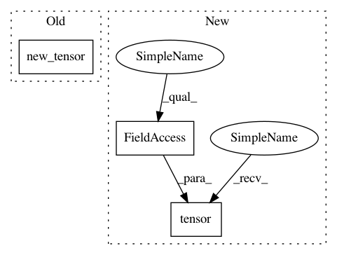

8a5b6efbc8fdf1c63f3633c344b4aacd53e3bc52,s2cnn/ops/so3_localft.py,,setup_so3_local_ft,#Any#Any#Any#,42
Before Change
F = F.view("float")
// convert to torch Tensor
F = like.new_tensor(F.astype(np.float32))
return F
After Change
F = F.view("float")
// convert to torch Tensor
F = torch.tensor(F.astype(np.float32), dtype=torch.float32, device=device) // pylint: disable=E1102
return F
In pattern: SUPERPATTERN
Frequency: 4
Non-data size: 3
Instances
Project Name: jonas-koehler/s2cnn
Commit Name: 8a5b6efbc8fdf1c63f3633c344b4aacd53e3bc52
Time: 2018-05-02
Author: geiger.mario@gmail.com
File Name: s2cnn/ops/so3_localft.py
Class Name:
Method Name: setup_so3_local_ft
Project Name: jonas-koehler/s2cnn
Commit Name: 8a5b6efbc8fdf1c63f3633c344b4aacd53e3bc52
Time: 2018-05-02
Author: geiger.mario@gmail.com
File Name: s2cnn/nn/soft/gpu/so3_fft.py
Class Name:
Method Name: _setup_wigner
Project Name: jonas-koehler/s2cnn
Commit Name: 8a5b6efbc8fdf1c63f3633c344b4aacd53e3bc52
Time: 2018-05-02
Author: geiger.mario@gmail.com
File Name: s2cnn/ops/s2_localft.py
Class Name:
Method Name: setup_s2_local_ft
Project Name: jonas-koehler/s2cnn
Commit Name: 8a5b6efbc8fdf1c63f3633c344b4aacd53e3bc52
Time: 2018-05-02
Author: geiger.mario@gmail.com
File Name: s2cnn/nn/soft/gpu/s2_fft.py
Class Name:
Method Name: _setup_wigner